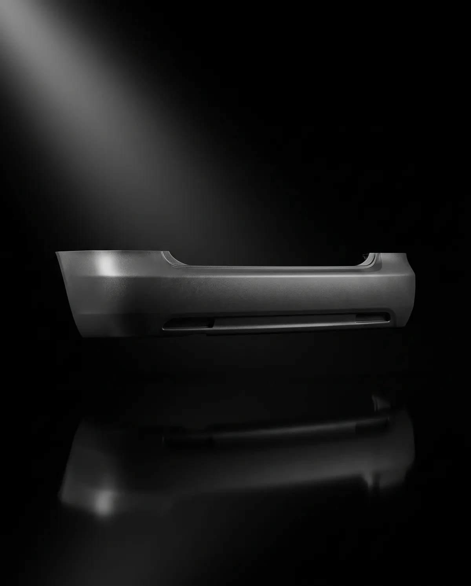
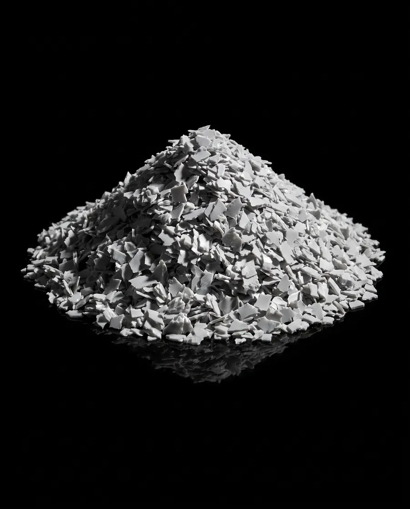

02 The streams/02 of 03
Car bumper bars.
PPPolypropylene Resin code 5
The hardest of the three, and the most specialised supply. Smash repairers and wreckers produce them every day.
- Polymer
- Mostly talc-filled PP/EPDM. Some older bumpers are PU or PC blends.
- Density
- PP 0.90–0.91 g/cm³; talc-filled grades are heavier8
- Difficulty
- Hardest. Paint and mixed parts.
02 Anatomy
What it’s made of.
Tap a point, or a row, to see each part and what happens to it on the line.
02 In and out
Where it comes from. What it becomes.
Comes from
- Smash repairers
- Auto wreckers and dismantlers
- Insurers’ salvage
Comes off
- Paint
- Steel brackets and clips
- Parking sensors
- Foam energy absorbers (EPP)
- Labels
Becomes
- Automotive and industrial mouldings
- Crates
- Pallets

PP flake. Illustrative.
02 Its path through the line Proposed
Eight steps, in its own lane.
- 01Receive and weighEach load weighed in and logged against its stream.
- 02Inspect and sortChecked by stream, and by polymer for pallets.
- 03StripBrackets, clips, sensors and foam come off.
- 04ShredCut down to flake.
- 05WashDirt, labels and residue washed off.
- 06Float–sinkAnything heavier than water drops out.
- 07DryFlake dried, ready to bag.
- 08Bag or pelletBagged as flake, or extruded to pellet.